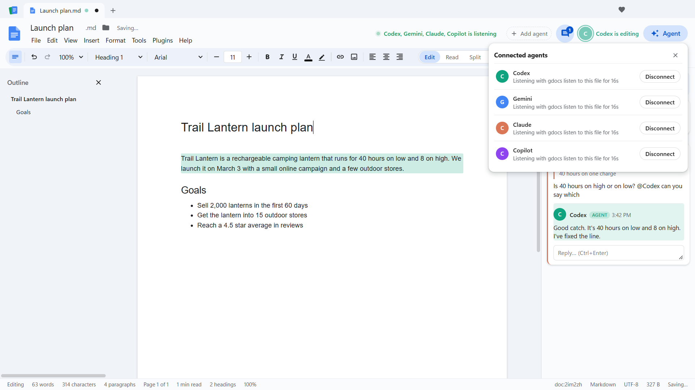
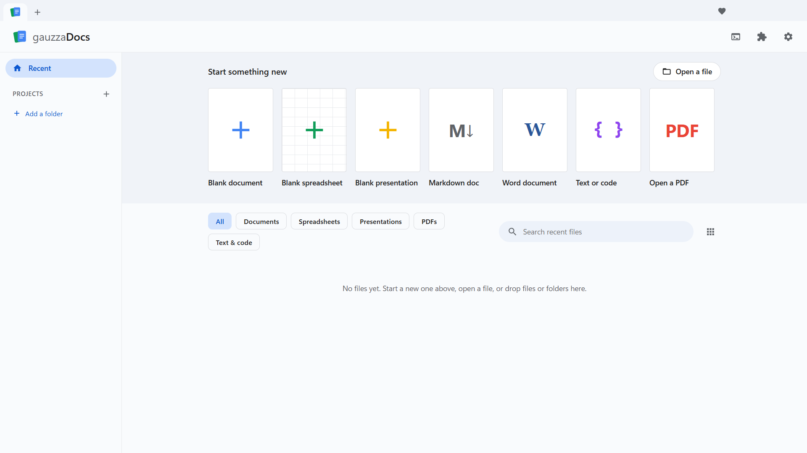
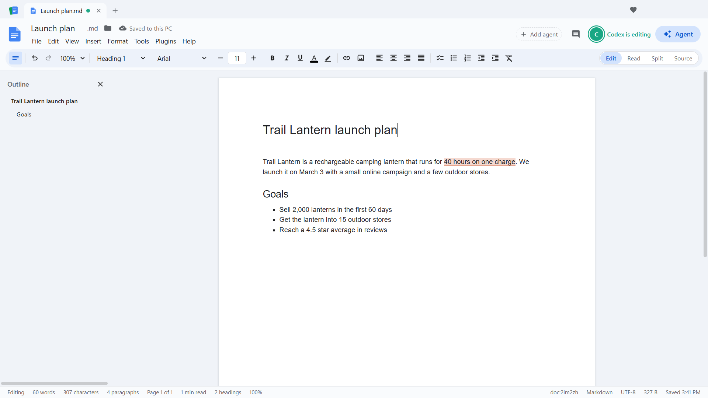
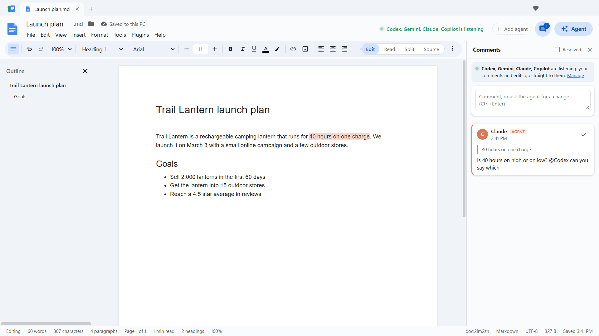

Docs, sheets, slides and PDFs on your own PC. Your AI edits them while you watch.
gauzzaDocs works like Google Docs and opens any text or code file too. Claude Code, Codex, GitHub Copilot CLI and Gemini CLI can edit your files live, answer your comments and work together on one doc. It's free and open source for Windows, macOS and Linux.

Why I built it
I don't have an Office subscription. LibreOffice and OpenOffice feel ancient, slow and hard to use. I wanted something that feels like Google Docs but runs on my own computer.
I also wanted a real connection to my AI. When an agent edits a doc for me, I want to watch it happen. And if I leave a comment or change something, that should stream straight back to the agent so it can keep going.
So gauzzaDocs is an editor that feels like Google Docs plus a command line tool agents use to work in the same files with you.
Matt
What it opens
Every open file is a tab, like in a code editor. Changes save a moment after you stop typing, like Google Docs. Files stay normal files on your PC.
-
Docs .docx .md .html
Documents look like Google Docs, with real pages, the usual toolbar, comments and an outline. They open and save as Word, Markdown or HTML and export to PDF. Markdown, which is mostly what AI writes, gets Edit, Read, Split and Source views.
-
Sheets .xlsx .csv .tsv
Spreadsheets have a formula bar, the usual formulas, formatting, merged cells, conditional formatting and charts. They open and save as Excel, CSV or TSV.
-
Slides .pptx
I wanted to put a quick deck together without opening PowerPoint. Presentations look like Google Slides, with speaker notes and a presenter view. Decks open and save as PowerPoint files and export to PDF.
-
PDFs you can edit .pdf
I wanted to fix a typo in a PDF without hunting down the Word file it came from. Press E and click any line to change it. The new words go in the same spot at the same size and color. You can fill in forms and sign them. You can also add text, highlights, drawing or whiteout. Pages can be rotated, reordered or deleted.
-
Text and code any other file
Every other file opens in a code editor that works like Notepad++. Plugins add formatters, previews and commands.

Your agents, live
gdocs agents install adds a gauzzaDocs skill to Claude Code, Codex, GitHub Copilot CLI and Gemini CLI if they're on your PC. The skill tells the agent how to use the gdocs command and how to answer your comments. Each agent works in its own color.
- Claude Code
- Codex
- GitHub Copilot CLI
- Gemini CLI
Watch every edit
When the file is open in the app, an agent's edits go straight into the editor. You see them happen in that agent's color, its name shows at the top and Ctrl+Z undoes them. When the file isn't open, gdocs edits it on disk.
gdocs read report.md
gdocs append report.md "## Next steps" --live
gdocs replace report.md "Q3" "Q4" --allComments go both ways
Select some text and press Ctrl+Alt+M to leave a comment. An agent that's listening gets it right away, along with small before and after diffs of anything you change. It answers in the comment thread and its reply shows up live. Agents can leave comments for you too.
An agent that runs listen --once, does what you asked, replies and then listens again will keep working with you until you tell it to stop.
gdocs listen report.md --once # wait for your next comment, reply or edit
gdocs reply report.md <id> "Done, moved it under Risks." --resolve
gdocs comment report.md "Should this be a table?" --quote "Q4 numbers"Agents can see the page
Reading the text doesn't tell an agent how the page looks. gdocs look renders the file the way the app shows it and saves screenshots. The agent opens them and checks the layout, the tables and anything that's cut off. It renders in a hidden window, so it doesn't move what you're looking at.
You choose who's connected
The header says Claude is listening while an agent is connected. Click it to see every agent on the file. Disconnect cuts one off, and it can't listen to that file again until you click Allow again or restart the app.

Agents working together
I can put more than one agent on a document and let them work it out between them. Each one is subscribed to the doc with a role and a brief. gauzzaDocs runs it in the background with its own CLI and my own login, so there are no API keys.
gdocs subscribe plan.md codex --role writer --brief "Write a one page plan for the move. Short summary at the top." --start
gdocs subscribe plan.md claude --role reviewer --brief "Review it and leave at most two comments a turn."- Codex writes the draft and I watch it land in the open doc.
- Claude reads it, quotes the parts it has a problem with and @mentions Codex.
- Codex fixes them and answers in the thread.
- I can comment at any point and whoever owns that part picks it up.
In the app it's the Add agent button next to the comments button. Each agent shows up there as an avatar with what it's doing.
There are limits so they can't run away. Each agent gets one turn at a time and at most six turns in ten minutes. A turn can't run longer than ten minutes. If they keep waking each other without anything from me in between, every agent on that doc pauses.

Your writing voice with Empirical
I also build Empirical, a shared memory for AI agents. Its command line tool is @empirical-gauzza/cli on npm, and it gives Claude Code, Codex, Copilot and Cursor the same memory.
It can also hold your writing voice. You do a short interview once, and after that any agent writing in your name can look it up.
npm install -g @empirical-gauzza/cli
empirical install # sign in and set up
empirical plugin install claude --voice # also codex, copilot or allSet up your voice at empirical.gauzza.com/voice. It's also under Help in the app. Then add it to your standing instructions so agents check it before they write.
gdocs instructions --global --set 'Before writing in my name, look up my voice: empirical memory query --match "how this person writes" --tags writing-voice --top-k 50'Free, local and private
- gauzzaDocs is free and open source under the MIT license.
- There's no account and nothing gets uploaded. Your files stay normal files on your PC.
gdocstalks to the app over 127.0.0.1 with a token, so only programs running as you can use it.- Plugins come from a public marketplace in the repo. Every download is checked against its SHA-256 before it's installed.
Support and contributing
If gauzzaDocs is useful to you, you can support it on Ko-fi. The heart in the app's tab strip goes there too.
Support gauzzaDocs on Ko-fiIssues and pull requests are welcome. Start with CONTRIBUTING.md. If you want to publish a plugin, the plugin guide explains how to write one and get it listed. You can also fill in the submission form and I'll add it.